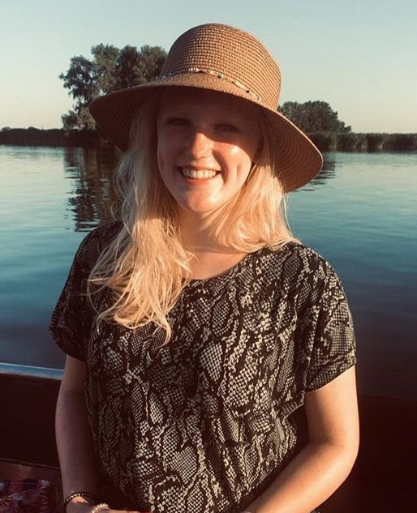

About me
My name is Eline Broier. I live in a small village nearby Roosendaal called Wouwse Plantage,
and I live there with my parents and my younger sister.
We've always had pets in the past and we still have. Now we have six cats and a dog.
I went to primary school in Wouw. I didn't like the school so I changed schools in 6th grade.
I went to another school that was also in Wouw. I had a great time there.
After that, I went to the secondary school in Roosendaal,
named Jan Tinbergen College where I did HAVO with the profile Natuur&Techniek.
In the future I would love to travel. I always wanted to visit Iceland, Australia and New Zealand.
In the summer holidays we often go to Germany and Austria. My family and me like mountain hiking.
My hobbies are:
During my leisure time I like to draw, bake and read books. I don't have a favorite genre,
but there is one book that is my favorite: The horse whisperer. I think it's a beautiful story.
I like horse riding, moutain biking. My aunt has her own horse, called Astrid.
I enjoy going to Astrid with my aunt to go for a outdoor ride.
After we return from the outdoor ride we go mountain biking trough the forest.
I also enjoy hiking. We live close to the forest so we do this a lot with my family and with my dog.
My dog is called Guusje. She is almost eleven months old.
Guusje and I go to the puppy training every week, we both enjoy the puppy training.
One of my main hobbies is photography, I mainly photograph flowers.
I love being outside in the nature. I garden,
I have my own piece of garden and I have my own kitchen garden on it.
Characteristics
I am:
- positive / optimistic
- creative
- curious / eager to learn
- empathetic
- social
But I am also:
- messy
- easily distracted
- chaotic
- impatient sometimes